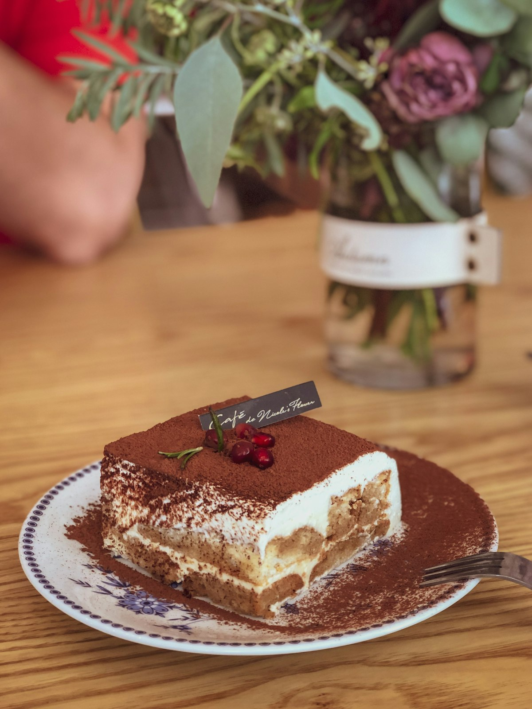

프라이팬으로 만드는 홈메이드 티라미수
오븐 없이 즐기는 이탈리아 디저트의 깊은 풍미

안녕하세요, 릴황입니다! 👋 오늘은 특별한 디저트를 준비했어요. 바로 이탈리아의 대표 디저트 티라미수(Tiramisù)인데요, 오븐이 없어도 집에서 완벽하게 만들 수 있는 방법을 공유할게요.
티라미수는 이탈리아어로 "나를 위로해줘(Pick me up)"라는 뜻을 가지고 있어요. 진한 에스프레소와 부드러운 마스카포네 크림, 그리고 코코아 파우더의 조화가 일상의 피로를 날려주는 특별한 디저트랍니다. 카페에서 파는 티라미수가 부럽지 않은, 집에서 만드는 프리미엄 디저트의 세계로 초대할게요! ✨
🍰 티라미수의 매력
티라미수는 특별한 날에만 즐기는 디저트라는 편견이 있어요. 하지만 한 번 레시피를 익히면 누구나 쉽게 만들 수 있는 사실상 가정용 디저트랍니다. 오븐도 필요 없고, 특별한 도구도 필요 없어요. 프라이팬 하나만 있으면 충분하답니다.
가장 큰 매력은 개인의 취향을 자유롭게 반영할 수 있다는 거예요. 커피 농도를 더 진하게 하거나, 알코올을 첨가하거나, 계란 노른자를 더 추가해 더 풍부한 맛을 낼 수도 있어요. 나만의 시그니처 티라미수를 만들어보는 재미가 쏠쏠하답니다.
🛒 재료 소개와 선택 팁
티라미수는 재료의 품질이 맛을 좌우해요. 각 재료의 특징과 선택하는 법을 알려드릴게요.
📋 티라미수 재료 (4인분 기준)
- 마스카포네 치즈 250g - 티라미수의 핵심! 부드럽고 크리미한 질감을 줘요
- 생크림 200ml - 마스카포네와 함께 크림을 만들어요 (35% 지방 함량 추천)
- 계란 노른자 3개 - 크림의 풍미와 부드러움을 더해요
- 설탕 50g - 크림과 시럽 각각에 사용
- 레이디핑거(사보이아륵) 1봉지 - 티라미수용 손가락 과자
- 에스프레소 200ml - 진한 커피가 티라미수의 핵심이에요
- 코코아 파우더 적당량 - 마무리 장식용 (무가당 사용)
- 마스카르포네/럼 (선택) 2큰술 - 더 깊은 풍미를 위해
🧀 마스카포네 치즈 선택하기
마스카포네는 이탈리아 북부 롬바륵디아 지방의 크림 치즈예요. 버터처럼 부드럽고 크리미한 질감이 특징이에요. 국내에서는 대형마트나 수입식품점에서 쉽게 구할 수 있어요.
선택할 때는 유통기한이 넉넉한 제품을 고르세요. 마스카포네는 상하기 쉬워서요. 그리고 가능하다면 이탈리아산 제품을 추천해요. 국산 마스카포네도 있지만, 이탈리아 원조의 깊은 풍미는 확실히 다르답니다.
☕ 에스프레소 만들기
티라미수의 깊은 맛은 에스프레소에서 나와요. 머신이 없어도 괜찮아요! 모카포트나 에어로프레스로도 충분히 진한 커피를 만들 수 있어요.
중요한 건 커피가 따뜻할 때 샤워디치를 만드는 거예요. 따뜻한 커피에 설탕을 녹여 시럽처럼 만들어야 레이디핑거에 잘 스며들어요. 커피가 식으면 설탕이 잘 녹지 않는답니다.
👨🍳 프라이팬으로 만드는 티라미수
이제 본격적으로 만들어볼게요! 오븐 대신 프라이팬을 활용하는 방법이에요.
Step 1: 에스프레소 시럽 준비
프라이팬에 에스프레소 200ml와 설탕 25g을 넣고 중불에서 끓여요. 설탕이 완전히 녹으면 불을 끄고 식혀둡니다. 이때 선택적으로 럼이나 마스카르포네 2큰술을 추가하면 더 깊은 풍미가 나요.
Step 2: 마스카포네 크림 만들기
볼에 계란 노른자 3개와 설탕 25g을 넣고 거품기로 잘 섞어요. 색이 연한 노란색으로 변하고 설탕이 녹을 때까지 약 3분간 저어주세요. 그 다음 마스카포네 250g을 넣고 부드럽게 섞어요.
Step 3: 생크림 휘핑
별도의 볼에서 생크림 200ml를 휘핑해요. 7~8분 정도 거품기로 휘핑하면 부드러운 휘핑크림이 완성돼요. 너무 단단하게 휘핑하지 말고, 뿔이 살짝 서는 정도가 적당해요.
Step 4: 크림 합치기
휘핑한 생크림을 마스카포네 혼합물에 조심스럽게 섞어요. 거품기가 아닌 주걱으로 아래에서 위로 끄올리듯 섞어야 부드러운 질감이 유지돼요. 너무 휘저으면 크림이 물러질 수 있어요.
Step 5: 레이디핑거 적시기
완성된 에스프레소 시럽에 레이디핑거를 번갈아 담그세요. 너무 오래 담그면 과자가 물러지니 1~2초만 살짝 담갔다가 바로 꺼내요. 한 번에 많은 양을 담그지 말고, 조립할 만큼만 준비하세요.
Step 6: 조립하기
프라이팬(또는 유리 용기)에 담근 레이디핑거를 깔아요. 그 위에 마스카포네 크림을 반 정도 올리고 평평하게 펴요. 다시 레이디핑거를 한 겹 더 깔고, 나머지 크림을 올려 평평하게 마무리해요.
Step 7: 냉장 숙성
프라이팬을 랩으로 꼭 감싸 냉장고에서 최소 4시간, ideally 하룻밤 숙성시켜요. 숙성 시간이 길수록 재료들이 서로 어우러져 더 깊은 맛이 난답니다.
Step 8: 코코아 파우더 뿌리기
서빙하기 직전에 체를 이용해 무가당 코코아 파우더를 고루 뿌려요. 너무 일찍 뿌리면 파우더가 크림의 수분을 흡수해 젖어버리니, 먹기 바로 전에 뿌리는 게 중요해요!
🎨 플레이팅과 보관 방법
티라미수는 단순하지만 우아한 디저트예요. 플레이팅에 따라 분위기가 달라질 수 있어요.
플레이팅 아이디어
- 클린 플레이트: 화이트 접시에 정사각형으로 커팅해 깔끔하게
- 글라스 컵: 투명한 컵에 레이어를 살리어 담아 시각적 즐거움 더하기
- 냄비 그대로: 프라이팬에서 바로 스푼으로 떠내어 캐주얼하게
- 민트 장식: 코코아 파우더 위에 민트잎 하나 올려 포인트 주기
보관 방법
티라미수는 냉장 보관이 필수예요. 랩으로 꼭 감싸거나 밀폐용기에 담아 3일 이내에 드세요. 장기 보관을 원한다면 슬라이스해서 개별 포장 후 냉동도 가능해요. 냉동 시 약 2주까지 보관 가능하며, 먹기 전 냉장실에서 자연 핏해주면 됩니다.
🌟 마무리 인사
오늘은 프라이팬 하나로 만드는 홈메이드 티라미수를 소개해드렸어요. 오븐이 없어도, 특별한 도구가 없어도 충분히 맛있는 디저트를 만들 수 있다는 걸 보여드리고 싶었어요.
티라미수는 만드는 과정 자체가 힐링이에요. 에스프레소의 향긋한 냄새, 마스카포네의 부드러운 질감, 그리고 코코아 파우더를 뿌리는 순간의 설렘까지. 이 모든 과정이 완성된 한 입의 디저트로 보답해줄 거예요.
주말 오후, 혹은 특별한 사람과 함께하는 저녁에 이 티라미수를 만들어보세요. 분명 모두가 놀라워할 거예요. 오븐 없이 만든 디저트가 이렇게 맛있을 수 있다니! 라며 말이죠. 😊
다음엔 어떤 베이킹 이야기를 들려드릴까요? 댓글로 여러분의 도전기를 들려주세요. 오늘도 달콤한 하루 되세요! 💕
- 릴황 드림